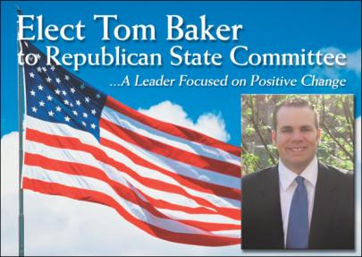

|

Loyalty to the
Republican Party- Tom is an elected Allegheny County
Republican Committeeman and is Secretary of the 5th
Council District Republican Committee in Pittsburgh. He
is also Secretary of the Young Republicans of Allegheny
County and has aided several Republican candidates.
Currently, Tom is serving as Campaign Manager for Paul
Snatchko's (R) campaign for the PA House of
Representatives in the 46th legislative district.
Dedication to community- Tom is a Family
Recruiter at Three Rivers Adoption Council and serves on
four non-profit boards. He is a member of the Board of
Directors of the Pittsburgh Urban Magnet Project (PUMP),
Greenfield Organization, Pittsburgh Singles Volunteers
Network, and Life Span, Inc. Tom and his wife, Erin,
currently serve as Co-Chairs of PUMP's Discover
Pittsburgh. He is also active with National Student
Partnerships, City Theatre, Greater Pittsburgh Community
Food Bank, and several other organizations.
Commitment to region- Tom grew up in
Greenfield and moved back to his hometown after earning
his Bachelors degree from Millersville University of PA.
Tom earned his Masters degree from Indiana University of
PA and served as a Career Counselor at the H. John Heinz
III School of Public Policy and Management at Carnegie
Mellon University. Tom and Erin look forward to raising
a family in Western Pennsylvania.
Passion for creating change- In 2005, Tom ran
an aggressive campaign for a seat on the Pittsburgh
Public School Board. Despite a 5 to 1 voter registration
differential Tom received 37% of the vote in the general
election. His candidacy was endorsed by several media
outlets including the Pittsburgh Post-Gazette and the
Pittsburgh Tribune Review. He was also endorsed by the
Republican Committee of Allegheny County, the Republican
Committee of Pittsburgh, and the 5th District Republican
Committee.
Endorsed by:
The Pittsburgh Post-Gazette
(Primary Election)
The Pittsburgh Post-Gazette
(General Election)
The Pittsburgh Tribune Review
ACORN Political Action Committee
Republican Committee of
Allegheny County
Republican Committee of Pittsburgh
14th Ward Independent Democratic Club
League of Young Voters
Certified Teacher K-6
Former Childhood Development Center Director
Bachelors and Masters Degrees in Education
Greenfield Organization Board of Directors
Graduate of Pittsburgh Public Schools |